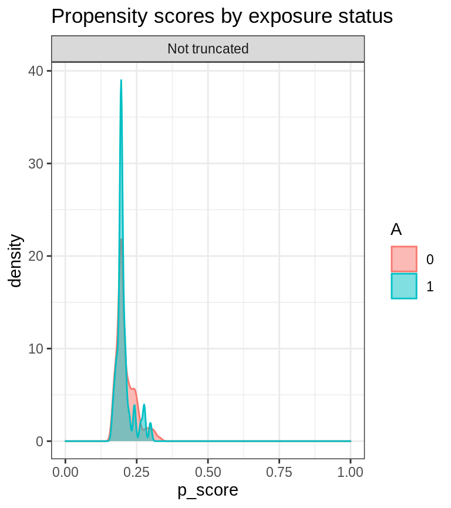

Contents:
Installation
- Install AIPW from GitHub
install.packages("remotes") remotes::install_github("yqzhong7/AIPW")
- Install SuperLearner or sl3)
#SuperLearner install.packages("SuperLearner") #sl3 remotes::install_github("tlverse/sl3")
Input data for analyses
set.seed(888) N <- 200 outcome <- rbinom(N,1,0.3) exposure <- rbinom(N,1,0.2) #covaraites for outcome model (Q) covariates.Q <- matrix(c(rbinom(N,1,0.4), rnorm(N,mean = 0,sd=1), rpois(N,lambda = 2)), ncol=3) #covariates for exposure model (g) covariates.g <- matrix(c(rbinom(N,1,0.4), rnorm(N,mean = 0,sd=1), rpois(N,lambda = 2)), ncol=3) # covariates.g <- c(rbinom(N,1,0.4)) #a vector of a single covariate is also supported
Using AIPW to estimate the average treatment effect
One line version (Method chaining from R6class)
library(AIPW) library(SuperLearner) #> Loading required package: nnls #> Super Learner #> Version: 2.0-26 #> Package created on 2019-10-27 library(ggplot2) AIPW_SL <- AIPW$new(Y= outcome, A= exposure, W.Q=covariates.Q, W.g=covariates.g, Q.SL.library = c("SL.mean","SL.glm"), g.SL.library = c("SL.mean","SL.glm"), k_split = 3, verbose=FALSE)$ fit()$ calculate_result(g.bound = 0.25)$ plot.p_score() #> Estimate SE 95% LCL 95% UCL N #> Risk Difference -0.267 0.132 -0.5250 -0.00817 200 #> Risk Ratio 0.393 0.413 0.1748 0.88221 200 #> Odds Ratio 0.266 0.616 0.0797 0.88957 200

A more detailed tutorial
1. Create an AIPW object
Use SuperLearner libraries
library(AIPW) library(SuperLearner) #SuperLearner libraries for outcome (Q) and exposure models (g) sl.lib <- c("SL.mean","SL.glm") #construct an aipw object for later estimations AIPW_SL <- AIPW$new(Y= outcome, A= exposure, W.Q=covariates.Q, W.g=covariates.g, Q.SL.library = sl.lib, g.SL.library = sl.lib, k_split = 3, verbose=FALSE)
-
Use sl3 libraries
Metalearner is required to combine the estimates from stacklearner!
library(AIPW) library(sl3) ##construct sl3 learners for outcome (Q) and exposure models (g) lrnr_glm <- Lrnr_glm$new() lrnr_mean <- Lrnr_mean$new() #stacking two learner (this will yield estimates for each learner) stacklearner <- Stack$new(lrnr_glm, lrnr_mean) #metalearner is required to combine the estimates from stacklearner metalearner <- Lrnr_nnls$new() sl3.lib <- Lrnr_sl$new(learners = stacklearner, metalearner = metalearner) #construct an aipw object for later estimations AIPW_sl3 <- AIPW$new(Y= outcome, A= exposure, W.Q=covariates.Q, W.g=covariates.g, Q.SL.library = sl3.lib, g.SL.library = sl3.lib, k_split = 3, verbose=FALSE)
2. Fit the AIPW object
This step will fit the data stored in the AIPW object to obtain estimates for later average treatment effect calculations.
#fit the AIPW_SL object AIPW_SL$fit()
3. Calculate average treatment effects
Check the balance of propensity scores by exposure status before ATE calculation
library(ggplot2) AIPW_SL$plot.p_score() #> ATE has not been calculated.

Estimate the ATE with propensity scores truncation
#estimate the average causal effects from the fitted AIPW_SL object AIPW_SL$calculate_result(g.bound = 0.25) #propensity score truncation #> Estimate SE 95% LCL 95% UCL N #> Risk Difference -0.253 0.131 -0.5096 0.00366 200 #> Risk Ratio 0.423 0.386 0.1986 0.90012 200 #> Odds Ratio 0.291 0.591 0.0915 0.92867 200
Check the balance of propensity scores by exposure status after truncation
AIPW_SL$plot.p_score()